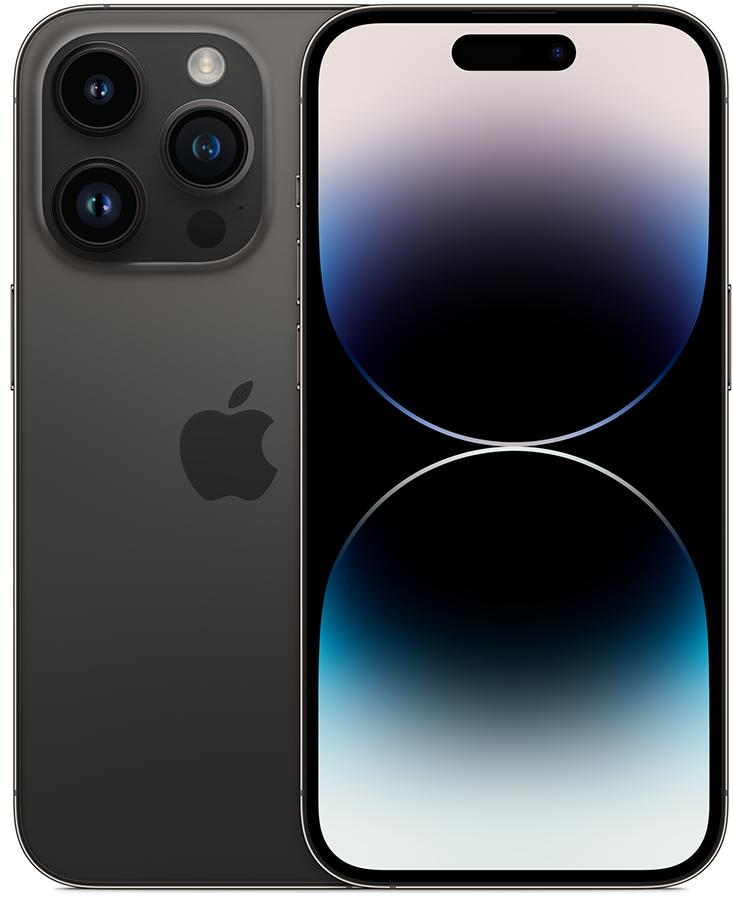
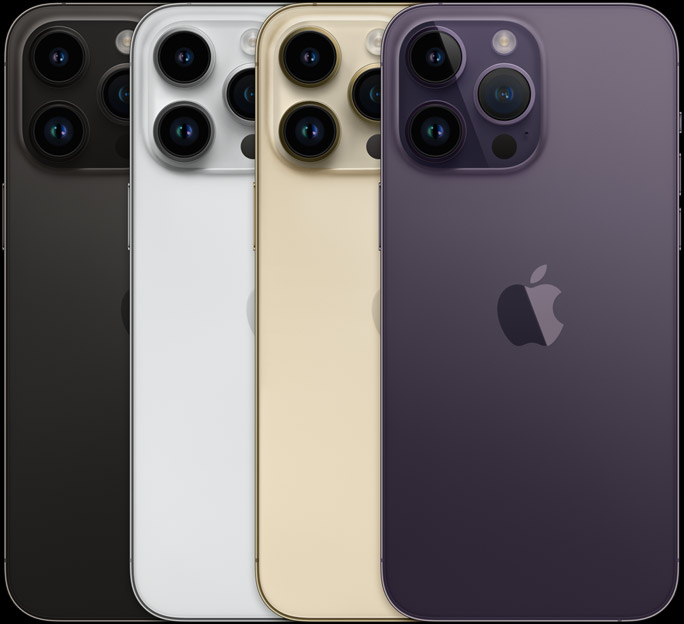

Iphone
Iphone 14

La pantalla del iPhone 14 tiene esquinas redondeadas que rematan el diseño curvo del dispositivo, y esas esquinas se encuentran dentro de un rectángulo estándar. Si se mide el rectángulo estándar en diagonal, la pantalla tiene 6,06 pulgadas (la superficie real de visión es inferior).
*Sistema De Camara Dual*
-Principal de 12 Mpx: 26 mm, apertura de ƒ/1,5, estabilización óptica de imagen por desplazamiento del sensor, lente de siete elementos y 100 % Focus Pixels.
-Ultra gran angular de 12 Mpx: 13 mm, apertura de ƒ/2,4, campo de visión de 120°, lente de cinco elementos.
-Zoom óptico de alejamiento x2 y zoom digital hasta x5.
-Cubierta de la lente de cristal de zafiro.
-Flash True Tone.
-Photonic Engine.
-Deep Fusion.
-HDR Inteligente 4.
-Modo Retrato con efecto bokeh avanzado y Control de Profundidad.
-Iluminación de Retratos con seis efectos (Luz Natural, Luz de Estudio, Luz de Contorno, Luz de Escenario, Luz de Escenario Mono y Luz en Clave Alta Mono).
-Modo Noche.
-Fotos panorámicas (hasta 63 Mpx).
-Estilos Fotográficos.
-Gama cromática amplia para fotos y Live Photos.
-Corrección del objetivo (ultra gran angular).
-Corrección avanzada de ojos rojos.
-Estabilización automática de imagen.
-Modo ráfaga.
-Geoetiquetado de fotos.
-Captura de imagen en formato HEIF y JPEG.
Ver más
Iphone 14 Pro

Frente de Ceramic Shield, diseño de acero inoxidable con parte posterior de vidrio mate texturizado.
La pantalla del iPhone 14 Pro tiene esquinas redondeadas que siguen el elegante diseño curvo del teléfono, y las esquinas se encuentran dentro de un rectángulo estándar. Si se mide en forma de rectángulo estándar, la pantalla tiene 6.12 pulgadas en diagonal (el área real de visualización es menor).
*Caracteristicas*
-Dynamic Island
-Pantalla siempre activa
-Tecnología ProMotion con frecuencias de actualización adaptativas de hasta 120 Hz.
-Pantalla HDR.
-True Tone.
-Amplia gama de colores (P3).
-Toque con respuesta háptica.
-Relación de contraste 2,000,000:1 (normal).
-Brillo máximo de 1,000 nits (normal); pico de brillo de 1,600 nits (HDR); pico de brillo de 2,000 nits (en exteriores).
-Revestimiento oleofóbico resistente a huellas dactilares.
-Compatibilidad para mostrar varios idiomas y caracteres simultáneamente.
Ver más
Iphone 14 Pro Max

Frente de Ceramic Shield, diseño de acero inoxidable con, parte posterior de vidrio mate texturizado
*Caracteristicas*
-Dynamic Island
-Pantalla siempre activa
-Tecnología ProMotion con frecuencias de actualización adaptativas de hasta 120 Hz.
-Pantalla HDR.
-True Tone.
-Amplia gama de colores (P3).
-Toque con respuesta háptica.
-Relación de contraste 2,000,000:1 (normal).
-Brillo máximo de 1,000 nits (normal); pico de brillo de 1,600 nits (HDR); pico de brillo de 2,000 nits (en exteriores).
-Revestimiento oleofóbico resistente a huellas dactilares.
-Compatibilidad para mostrar varios idiomas y caracteres simultáneamente.
Ver más